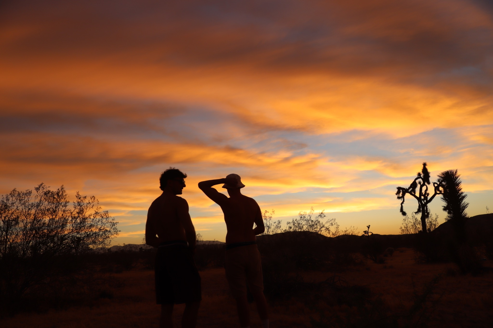
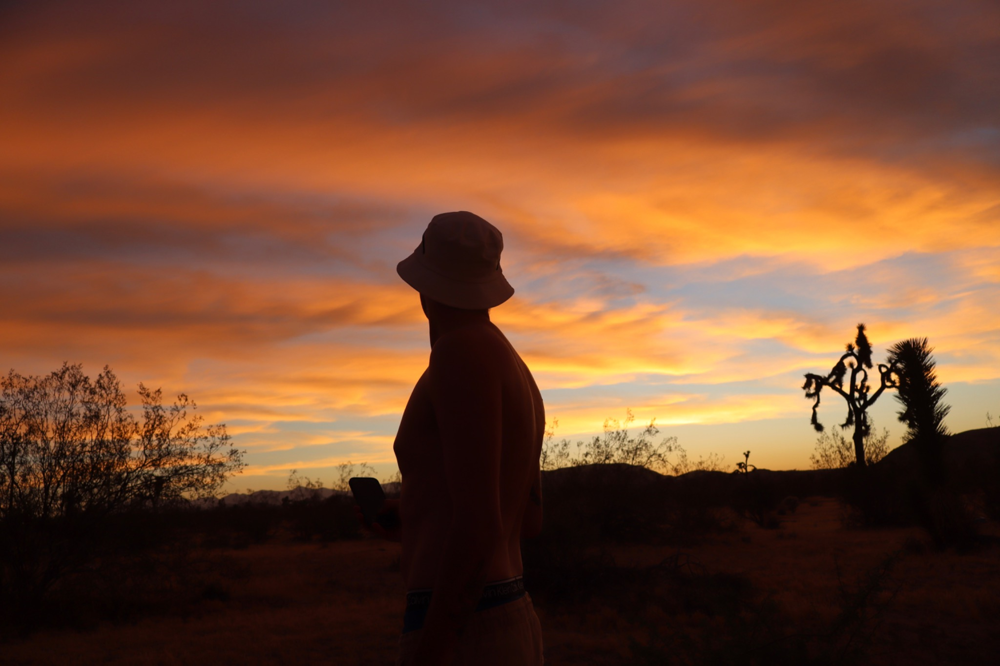
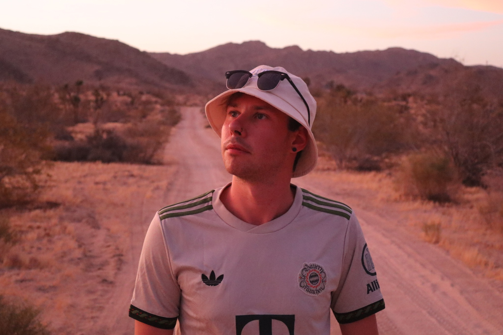
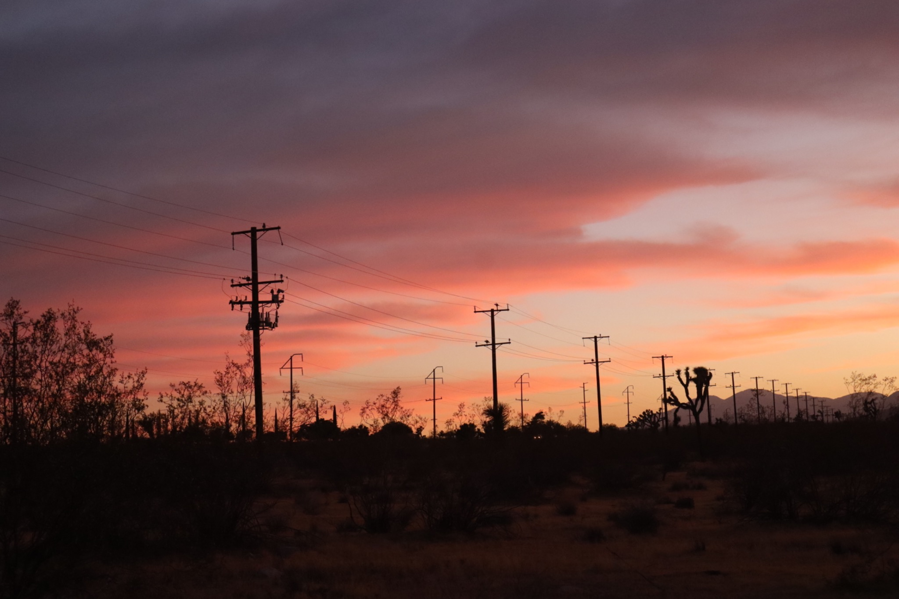
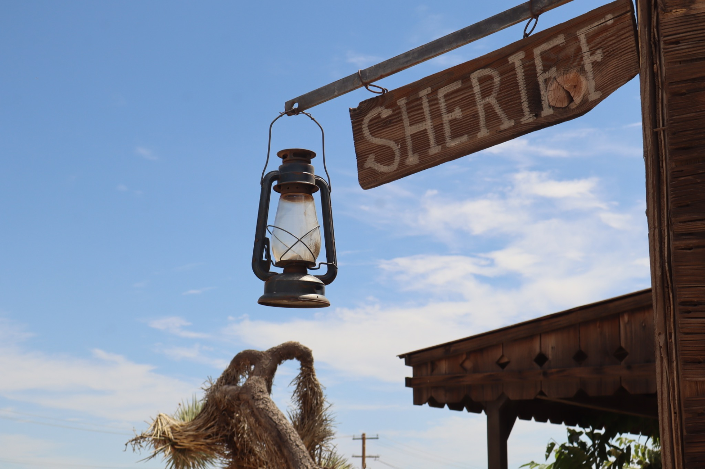
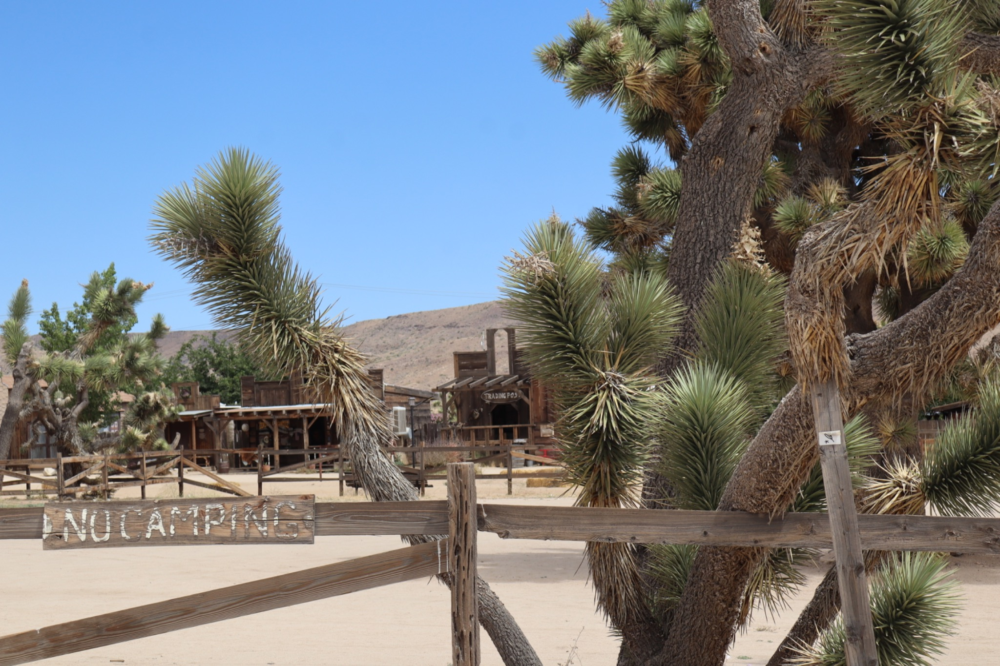
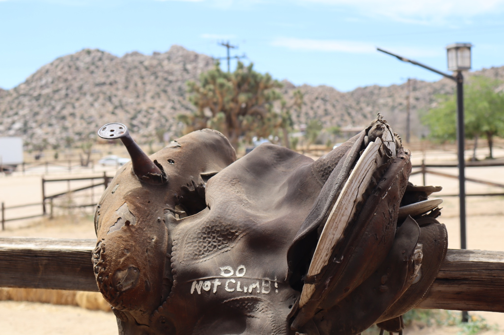
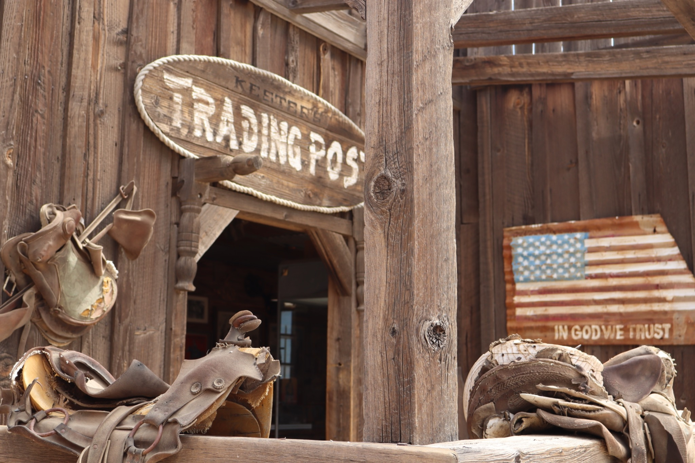
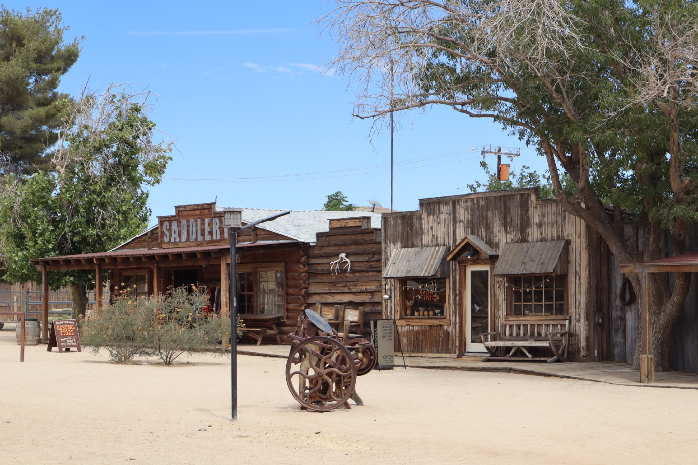

California / 04
Desert
Open roads, silence and desert light.
Leaving the coast behind, California opens into a different landscape. Empty roads, dry mountains, Joshua trees and small desert towns create a quieter side of the journey.

California Desert2026
Beyond the coast.
A few hours from the Pacific, the landscape changes completely.
Roads stretch through open land, mountains sit on the horizon and Joshua trees break the silence of the desert.
This part of California feels slower, wider and more isolated.
Roads stretch through open land, mountains sit on the horizon and Joshua trees break the silence of the desert.
This part of California feels slower, wider and more isolated.
Selected photographs
California Desert / 2026



Somewhere between the road and the horizon, everything slows down.



Silence, space & light.
The desert strips the landscape back to its simplest elements: rock, sand, vegetation and sky.
Pioneertown and Joshua Tree add traces of human history, but the scale of the landscape remains the strongest presence.


